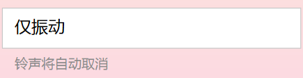

a. 仅振动情况下，闹钟设置页是否要提示？
在设置仅振动时，底下有文字提示“铃声将自动取消”，因此不必再进行过多的提示。
b. 手机电量低的情况，如何避免手机关机导致闹钟失效？
当用户设定闹钟时，手机电量低于15%弹出dialog提醒：
c. 闹钟设置时间与当前时间相差很小情况，是否提醒用户？
不提醒。
d. "设置”页面中，当用户在二级页面中，如“天气”页面，此时切换至“闹钟”页面，再切换回“设置”页面，应保持再“天气”页面还是跳转到“设置”页面“？
应跳转到“设置”页面。
e. 如果出现紧急天气情况，应用要通知用户吗？（天气仅仅为闹钟服务、还是一个独立的功能）
智能闹钟APP主要以闹钟服务为主，天气是APP的一个辅助功能，出现紧急天气不通知用户，减少不必要的干扰。



手机电量低于15%，
请充电以免闹钟失效
确定
取消
更多极端情况应对说明